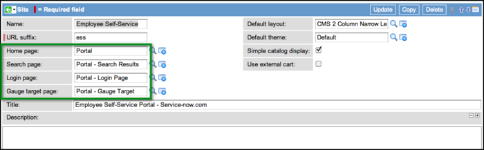

Tutorial - Knowledge10 Lab
Contents
1 Overview
The best way to learn about the content management system is to build a site. First, complete the steps in Content Management Step-By-Step Overview, then build a master template site and add content pages.
This example demonstrates how to build a basic knowledge site with all the necessary components. The steps in this tutorial can be used as reference material for creating any kind of site. This method was taken from the Content Management Lab presented at the Knowledge 2010 Conference. The goal of this example is create a basic knowledge management interface that uses the terminology of content management and shows the importance of master templates.
2 Why Create a Master Template
After obtaining style guides for your organization, create the initial site pages. These first pages establish the standard by which all other pages in the site are measured. The first pages you create can also be used as master templates or blueprints for other pages in the site. All of the site components above the description field serve as the master templates for the site:

Here are a few reasons why master templates are so useful when creating CMS sites:
{kind=link}
- Rapid, no-risk page copying. Creating new pages from the master template saves you the work of creating the same elements over and over again.
- Working restore point for pages within the system. Always have a working template available if something goes wrong in one of the blocks or in the theme CSS. It may be easier to start over using the template, instead of troubleshooting complex changes.
- Functional reference for any and all editors within the site project. Referring back to the master template ensures that pages continue to conform to the style guide.
The base system sites and their associated files serve as good master templates.
- For administrators new to the CMS, the base system sites provide pristine working restore points and reference.
- It is easy to copy the base system pages and restyle them to match your requirements.
3 Building Master Templates - Step by Step
There are numerous shared components in a page. It is important to understand how the components work together to create each CMS page in the system. Follow the steps below to create a single master page and generate all important components within the site.
- Build a Layout. Regardless of the interface, sites can be distilled into a few simple layouts.
- Build a Theme. The theme defines the structure of the layouts in CSS as well as the base styles, such as fonts and colors.
- Build the Common Blocks. Pages are composed of content blocks. Most content blocks are reused on multiple pages. For the master template, build basic blocks such as a header, side navigation, and some basic content for the main content area of the page. More detailed content can be added later, but content that will be reused on many of the pages in the site should be defined here.
- Build a Site Entry Page. Design the first page that users see when entering the site.
- Build a Detail Page. Design the detail pages to determine how pages such as knowledge articles, catalog items, and search results will be displayed.
- Assign the Pages Created to the New Site. Create the site and apply the layout and theme to the site defaults. Then, navigate to the All Pages list and specify the master template site in the Site column for all of the master template pages.
Below are examples of steps for building a knowledge management site.
3.1 Building a Layout
Within the ServiceNow platform, a layout defines where you can place elements on a page and the width of space they can occupy. Layouts are used within the content management system and for homepages. For the knowledge management site, the first step is to build the layout that arranges the content.
This example shows a common layout used in site design that employs a header with a narrow left column for navigation and a wide center column for content. The layout is built with a basic HTML table that is within a div container. The class definitions abstract any rendering details in order to leverage CSS rules within a theme. In this example, the container div centers the interface, and the left and right content areas adhere to specific measurements. Remember to look up the dimensions of the corporate layout in the corporate design style guides.
For more information on layouts, see Defining a Layout.
<div align="center" class="layout_container">
<table border="0" cellspacing="0" cellpadding="0" id="${jvar_name}" width="1000px" height="100%">
<tr>
<td colspan="2" id="dropzone0" dropzone="true" class="content_header"/>
</tr>
<tr>
<td id="dropzone1" dropzone="true" class="content_left" />
<td id="dropzone2" dropzone="true" class="content_right"/>
</tr>
</table>
</div>
3.2 Building a Theme
{kind=link}
Themes are a collection of CSS files. The Lab theme, used in the example, consists of a base style sheet and a separate style sheet specific to the tab interface on the entry page. The information is in two different style sheets mostly for organizational purposes, but also to allow for sharing styles between themes without code duplication. Because the tab interface is common to another theme, all of the rules associated with the widget are contained within a single style sheet.
Lab - Base Styles is the style sheet that defines the classes referenced in the layout. This is important because the layout classes are portions of the theme that are defined in order to set column dimensions and gutter widths.
DIV.layout_container{
margin: 0px;
padding: 0px;
width: 100%;
height: 100%;
}
td.content_left{
width: 192px;
border-right: 12px solid #FFF; /***creates the separation gutter between the left and right columns***/
white-space: normal;
vertical-align: top;
}
td.content_right{
border-right: 12px solid #FFF;
width: 808px;
vertical-align: top;
}
3.3 Building the Common Blocks
In this example, only four pages are created and only a few blocks are needed, such as a header, side navigation, and some basic content for the main content area of the page. More detailed content can be added later, but content that will be reused on many of the pages within the site should be defined for the master template.
Pages remain blank until the blocks are added. To guide this page building exercise, each block is named with the prospective dropzone. This is done here to illustrate the relationship between the block and the layout. These blocks will be used to design the first page that users see when entering the site.
For more information, see Using Content Blocks.
{kind=link}
- Lab 0 Header (dropzone0). Uses a graphic as a decorative header.
- Lab 1 Navigation Links (dropzone1). Displays a list generated by querying the Page [content_page] table by site.
- Lab 2 Content Body Heading (dropzone2). Shows a simple way to pass the page title to render on the page dynamically.
- Lab 2 Homepage Search and Welcome (dropzone2). Illustrates how you can use a dynamic block to call an existing system macro.
- Lab 2 Tab Menu for Knowledge (dropzone2). Lists knowledge articles by relevance and attributes available to articles.
- Lab 2 Specific Article Group (Most Helpful) (dropzone2). Knowledge articles grouped by relevance and article attributes.
- Lab 2 Specific Article Group (Most Read) (dropzone2). Knowledge articles grouped by relevance and article attributes.
- Lab 2 Specific Article Group (Newest) (dropzone2). Knowledge articles grouped by relevance and article attributes.
3.3.1 Lab 0 Header
This block can be either a static or dynamic content block because it will simply hold a single image. This example uses a dynamic content block.
To create the header
- Navigate to Content Management > Images.
- Click New.
- Enter a Name for the image.
- Select Click to Add and upload the header image.
- Navigate to Content Management > Dynamic and click New.
- Add this reference to the header image between the Jelly tags:
<img src="lab_0_header.pngx" />
{kind=link}
Some navigation within CMS sites revolves around generating lists of links. This example creates a basic site map of the existing pages within the site, by calling the Page [content_page] table. To figure out the basic arrangement, look at the choices in the Order and Order Direction fields.
For more advanced control over list rendering, use the Type and Frame fields. These settings can be used alone or together for control over lists in the system.
3.3.3 Lab 2 Content Body Heading
{kind=link}
Other discussions on content management stress the importance of organizing the site URL suffix and page Name fields to establish and maintain a meaningful URL in the browser address bar. This example takes this one step further and leverages the Name field within a page record as the title of the page.
3.3.4 Lab 2 Homepage Search and Welcome
This block is primarily text, with a system search rendered horizontally across the block. The block references a UI macro. For more information on calling macros, see UI_Macros.
Here is the macro call:
<g:text_search_widget size="130"/>
Here is the full code of the dynamic block. Please note the macro call at the bottom:
<p>The ServiceNow content management system is designed to provide a branded, business-to-consumer interface between your IT department and your user community. Rich in functionality and entirely browser-based, the content management system offers:
<br />
</p>
<ul>
<li>A familiar, business-to-consumer interface</li>
<li>Full integration with your existing ServiceNow IT management suite</li>
<li>Robust style and customization options to allow easy corporate branding</li>
<li>Standard, web-based building blocks designed for use by non programmers</li>
</ul>
<p />
<br/>
<form name="content_search" id="content_search" action="content_search.do" method="post" style="padding-left:5px; padding-bottom:10px;">
<input type="HIDDEN" value="${current_page.getSiteID()}" name="sysparm_current_site"/>
<span class="globalSearch contextSearch" >
<g:text_search_widget size="130"/>
</span>
</form>
<br/>
3.3.5 Lab 2 Tab Menu for Knowledge
This tab interface is and easy way to have three separate lists occupy the UI space of a single list. In the interface shown in the graphic above, note that four blocks are used.
- Lab 2 Tab Menu for Knowledge. Controls the look and feel of the tabs, as well as which of the blocks are visible.
- Lab 2 Most Helpful. Displays a list of the highest rated articles in the knowledge base.
- Lab 2 Most Read. Displays a list of the articles with the highest view count.
- Lab 2 Newest. Displays the most recently published articles.
Following is the code that powers the tab interface. The code floats a few div containers to create the tabs and gives them onClick actions that set the visibility of the blocks stacked below the menu.
<script language="JavaScript">
function setVisibility(id, visibility) {
document.getElementById(id).style.display = visibility;
}
function setButtons(id){
document.getElementById("most_helpful").className="tabs_top_search";
document.getElementById("most_read").className="tabs_top_search";
document.getElementById("newest").className="tabs_top_search";
document.getElementById(id).className="tabs_top_search_active";
}
</script>
<div style="background-color=#FFF;">
<div class="tabs_top_search_active" id="most_helpful" onclick="setButtons(this.id);setVisibility('helpful_kb', 'inline');setVisibility('most_read_kb', 'none');setVisibility('bookmarked_kb', 'none');setVisibility('newest_kb', 'none');">Most helpful</div>
<div class="tabs_top_search" id="most_read" onclick="setButtons(this.id);setVisibility('helpful_kb', 'none');setVisibility('most_read_kb', 'inline');setVisibility('bookmarked_kb', 'none');setVisibility('newest_kb', 'none');">Most read</div>
<div class="tabs_top_search" id="newest" onclick="setButtons(this.id);setVisibility('helpful_kb', 'none');setVisibility('most_read_kb', 'none');setVisibility('bookmarked_kb', 'none');setVisibility('newest_kb', 'inline');">Newest</div>
<div style="clear:both;"></div>
</div>
The defined CSS rules are referenced by this code. The CSS visibility attribute is set by default to display:none; while the JavaScript toggles the value from "none" to "inline".
div#helpful_kb, div#most_read_kb, div#bookmarked_kb, div#newest_kb, div#solutions_kb{
display: none;
}
Notice that both the Type and Frame fields are defined in this list record. This is important because both of these fields call macros used to wrap markup around the list itself. This demonstrates how to use the Type and Frame fields for more control over the list.
{kind=link}
Following is the code behind the selected list Type.
Macro Name: Lab 2 Tabs Interface Definition - Decorative background for the most helpful, most read, and newest knowledge articles.
The styles were left inline to illustrate the use of this particular macro as a decorative container.
<div class="content_list_title">${jvar_title}</div>
<div id='get_help' style="display:block; padding:4px 10px; background-color: #f6f6f6; border-left: 1px dotted #CCCCCC; border-right: 12px solid white;">
<ul>
<g:for_each_record file="${current}" max="${jvar_max_entries}">
<li style="padding:4px;">
<g:content_summarizer content="${current}"/>
</li>
</g:for_each_record>
</ul>
</div>
Following is the code behind the Frame field.
Macro Name: KB Most Helpful - Wraps a container around the list (represented in the code with the ${body} variable) to control the visibility.
<div id="helpful_kb">
${body}
</div>
3.4 Building a Site Entry Page
Creating a site entry page involves adding the blocks previously created onto a page. Use the graphic at the beginning of the Building the Common Blocks section as a reference. Once the graphic is recreated as a page, the first master page template is complete. Congratulations!
The next step is to create a detail page template by duplicating the master page template and replacing one block with a detail block.
3.5 Building a Detail Page
Creating a detail page as one of the master templates is important because it allows you to:
- Become familiar with how detail pages work and how to render any ServiceNow form within the CMS.
- Construct the detail page early enough in the design phase so you can adjust the site layout and CSS to accommodate custom forms. For example, if the knowledge base articles displayed by the CMS use screenshots that are greater than 1024px wide, either the layout or the screenshots need to be adjusted.
To create a detail page, make a copy of the site entry page and add a content block called current document to the page.
3.6 Assigning the Pages to a Site
Now that there are two pages for the master template, create a site.
To assign the pages to a new site:
- Navigate to Content Management > Sites.
- Click New.
- Enter a Name for the site.
- Enter the URL suffix.
- In the Home page field, select the site entry page so it is presented first when a user opens the site.
- Right-click the form header bar and Save the site.
- In the Pages related list, click Edit.
- Select the site entry page and the detail page created above.
- Click Save.
- Update the site.
The pages are now associated with the site and the master template is complete.